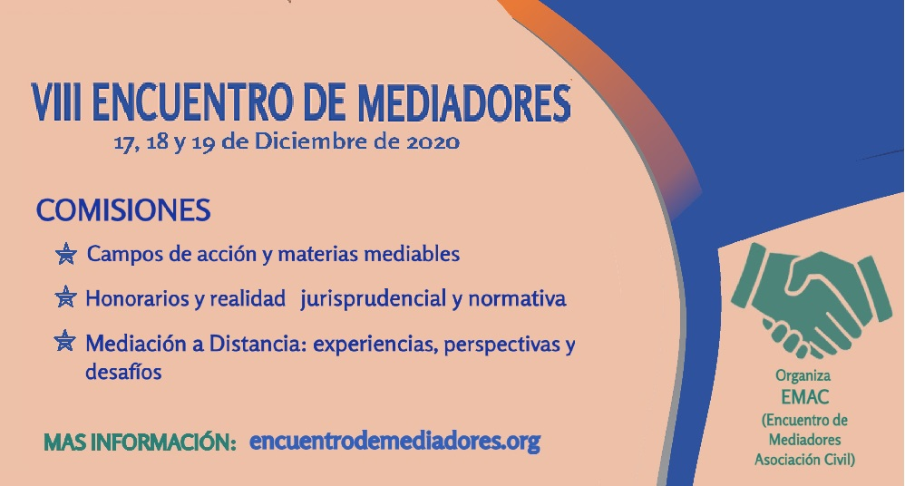
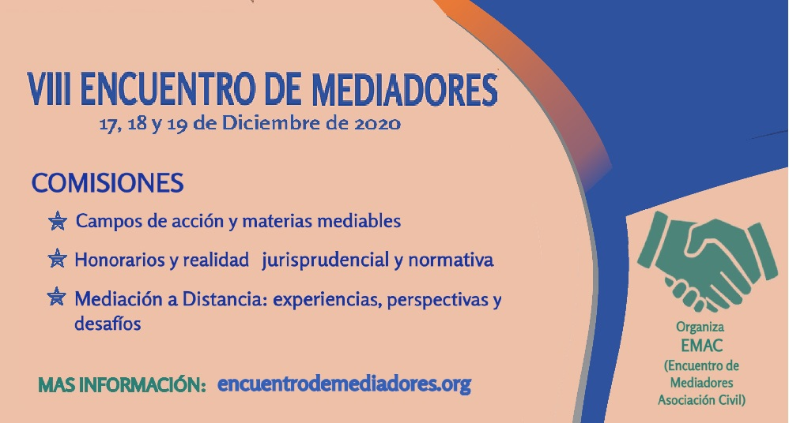
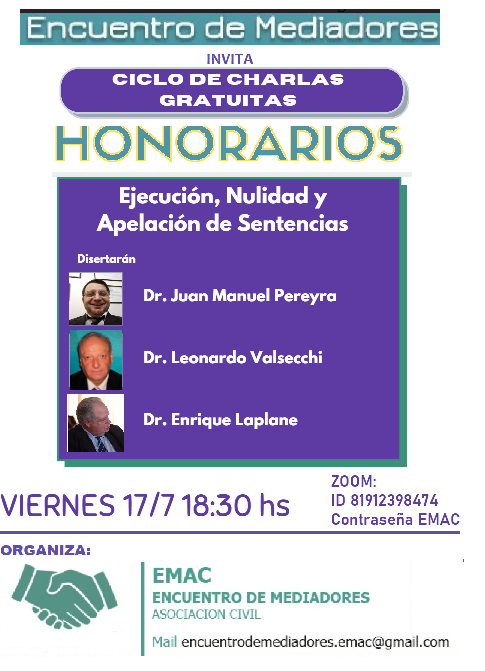

Comisiones del VIII Encuentro
Estos son los temas que debatiremos en las distintas comisiones
Inscribite! Completa el formulario aqui


Estos son los temas que debatiremos en las distintas comisiones

"Hablando con Jueces sobre Mediación" Miércoles 26/8/2020
Moderadores: Javier Poggi - Silvina Caisson
Reiteramos el agradecimiento a los Dres. Rodrigo Bionda y Paulo A. Maresca, jueces del fuero civil y comercial de la Provincia de Buenos Aires, por haber compartido esta actividad y su vision innovadora con nosotros, y legitimar nuestra labor como mediadores.
Esto dijo en sus redes el Dr. Bionda sobre nuestra actividad:

Primera parte, sobre Ejecución de Honorarios a cargo del Dr. Juan Manuel Pereyra, mediador de Lomas de Zamora.
Segunda parte sobre NULIDADES, a cargo del Dr. Leonardo Valsecchi, mediador de Avellaneda - Lanus.
Tercera parte sobre APELACIONES, a cargo del Dr. Enrique Laplane, mediador de La Matanza.
Ejecución, nulidad y apelación de sentencias regulatorias por Zoom - 17/7/20 a las 18.30 hs

Este jueves 8 de julio de 2020 en el marco del Ciclo de Conversaciones con jueces, organizado por E.M.A.C. (Encuentro de Mediadores), Asociación Civil, se llevó a cabo la conversación con el Dr. Paulo A. Maresca, titular del Juzgado 9 de 1º Instancia en lo Civil y Comercial del Departamento Judicial de General San Martín, sobre el tema: "LA MEDIACIÓN Y LAS AUDIENCIAS REMOTAS A LOS OJOS DE UN JUEZ".Agradecemos la oportunidad de haber escuchado sobre las nuevas dinámicas que despliega en su juzgado asi como también la mención del trabajo de los mediadores antes, durante y después de llevar adelante las audiencias, y la importancia de la mediación como elemento pacificador y de acceso a justicia, y que dicho trabajo esté bien remunerado.
Directora de la Dirección Provincial de Métodos Alternativos de Resolución de Conflictos. a cargo del Instituto de Reformas Legislativas CAMDP (viernes 29/5/20) ENCUENTRO DE MEDIADORES·LUNES, 1 DE JUNIO DE 2020·
MEDIACIÓN A DISTANCIA
RETRIBUCION DEL MEDIADOR (HONORARIOS)
CAPACITACION
MULTAS Y SUMARIOS.
Un dato interesante fue cuando le preguntaron sobre la naturaleza jurídica del mediador y la mediación, se explayo sobre las diferentes teorías, y entre ellas menciono la sostenida por EMAC de que se trata de una función publica de gestión privada.
Por ultimo contesto preguntas que le acercaron los concurrentes, se comprometió a responder las que habían quedado pendientes.
ENCUENTRO DE MEDIADORES·MARTES, 11 DE SEPTIEMBRE DE 2018
El 25 de abril de 2017 el Comité de Gestión y Seguimiento de Encuentros de la Provincia de Buenos Aires se reunió con Director de Mediación y Composición, el Dr. Sergio C. Dos Santos, ocasión que se le agrego para su tratamiento dentro de esa Dirección el Proyecto de Honorarios consensuado por los mediadores en el VI Encuentro de Mediadores de la Provincia de Buenos Aires que contempla las reales necesidades de cobro de una retribución digna de los abogados-mediadores.
El Dr. Dos Santos formó expediente administrativo para su tratamiento, recibiendo el Nro. 21200-101668/17. En ese mismo Expte. se presentó posteriormente el Proyecto COLPROBA, con una escala que iba entre el 6 y el 10%.
El Colegio de Abogados de Lomas de Zamora, presentó un rechazo a la modificación de la escala propuesta por COLPROBA. El Colegio de Abogados de La Matanza también presentó nota de rechazo al proyecto COLPROBA. El Colegio de Abogados de Necochea planteo su disidencia al Proyecto COLPROBA, pero basado en que debía ajustarse a las normas del art. 730 CCyCN, y que la retribución debía ajustarse al verdadero trabajo efectuado.
En el mes de Octubre pedimos “Vista de Causa”, la cual no tuvo respuesta, vinieron la Jornadas Provinciales y se envió otra solicitud de Vista. No teniendo resultado con la DPMARC, se procedió ha averiguar donde se encontraba el mismo, visto que estaba en la secretaria General del Ministerio, se pidió al Sr. Ministro de Justicia, la correspondiente “Vista de Causa”. En esta oportunidad se nos comunicó que estaba disponible al efecto. Concurrimos a ver el Expediente, y logramos comprobar que habían dividido el mismo, aunque se mezclaban diversos temas y notas.
En el mes de marzo con el dictamen del Área Legal y Técnica del Ministerio, se había dado traslado a COLPROBA de la propuesta elaborada desde la Subsecretaria de Acceso a la Justicia de la Provincia de Buenos Aires conforme al mismo.
Ahora recibimos la noticia que existe el decreto 964/2018 Digitalizado, GDEBA-GPBA, con fecha 30 de Agosto de 2018, y aun no publicado
Siendo que somos los gestores iniciales de este Expediente sobre la Remuneración del Mediador, conforme a derecho se nos debió dar traslado del dictamen y de las presentaciones que realizo cualquier entidad dentro del mismo, por eso entendemos que podría existir nulidades con lo cual el mismo tendría vicios desde antes de su nacimiento.
La reacción inmediata fue el planteo del Rechazo del mismo, pues es un ataque directo a uno de los derechos humanos reconocido en el Art. 25 de la Declaración Universal de los Derechos Humanos y ratificado en el Art. 11 del Pacto Internacional de Derechos Económicos, Sociales y Culturales, el derecho Alimentario.
Nos oponemos pues ese Decreto viola principios de equidad al disminuir desproporcionalmente la retribución del mediador, obsérvese que la Mediación Previa Obligatoria, como fue concebida por la Ley 13951, es una actividad que le pertenece al Poder Ejecutivo, pero donde el Estado no sufre costo alguno, pues al delegar esa función en los Abogados Mediadores, estos cargan los costos del sistema.
En defensa de nuestros derechos comenzamos a circularizar la información logrando una reacción muy positiva de los Abogados- Mediadores, donde a modo de ejemplo en la web vía CHANGE, se obtuvo la adhesión de más de 1200 firmas, también vemos con agrado que distintos Colegios de Abogados de la Provincia de Buenos Aires, se solidarizaran y rechazan ese decreto, también una mención a otras sociedades intermedias que también se han solidarizado. Hoy estamos en el proceso de pedir reuniones con las autoridades, presentando las notas respectivas, tratando de evitar un conflicto no querido por nuestra parte.
Seguimos trabajando por y para los Mediadores y la Mediación en la Provincia de Buenos Aires.

- te pedimos que firmes por que:
- Te dijeron que el Dec. 964 modifica la base para el cálculo de tu RETRIBUCIÓN. El Dec. 2530/10 decía “A los fines de determinar la base sobre la que se aplicará la escala precedente, se tendrá en cuenta el monto del reclamo, acuerdo o sentencia, según corresponda, incluyendo capital e intereses”. - El Dec. 964/18 suprimió el “incluyendo capital e intereses” es decir desde su aplicación será solo capital.
**- Nadie te dijo esto... por eso estamos nosotros defendiendo tus intereses, hacete escuchar. **
{kind=link}